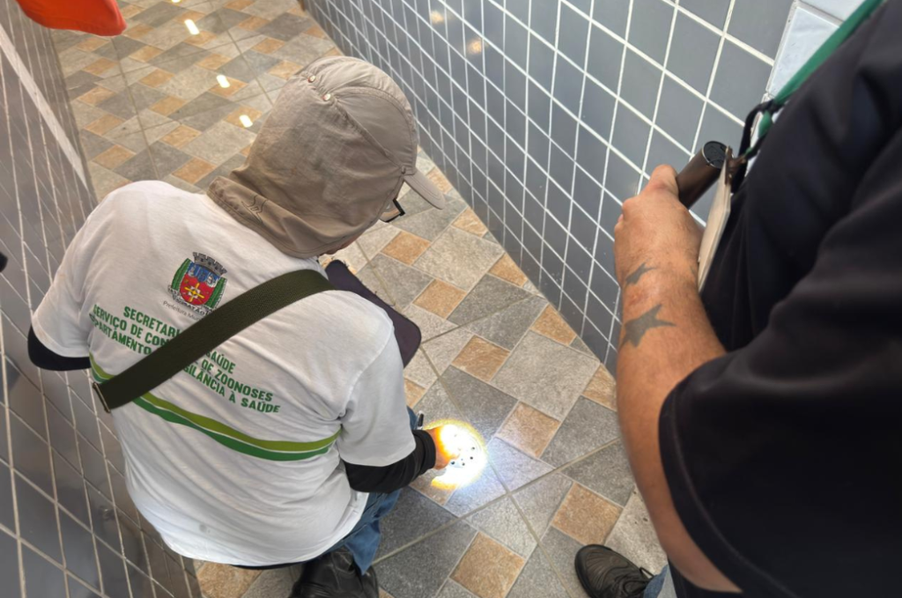
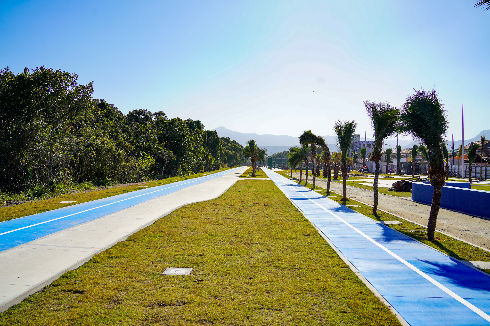
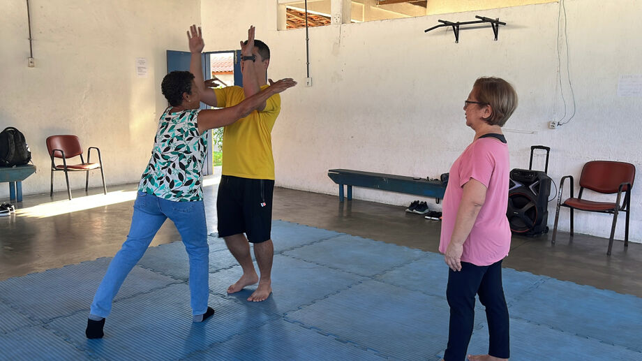
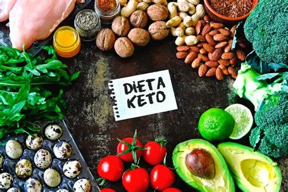
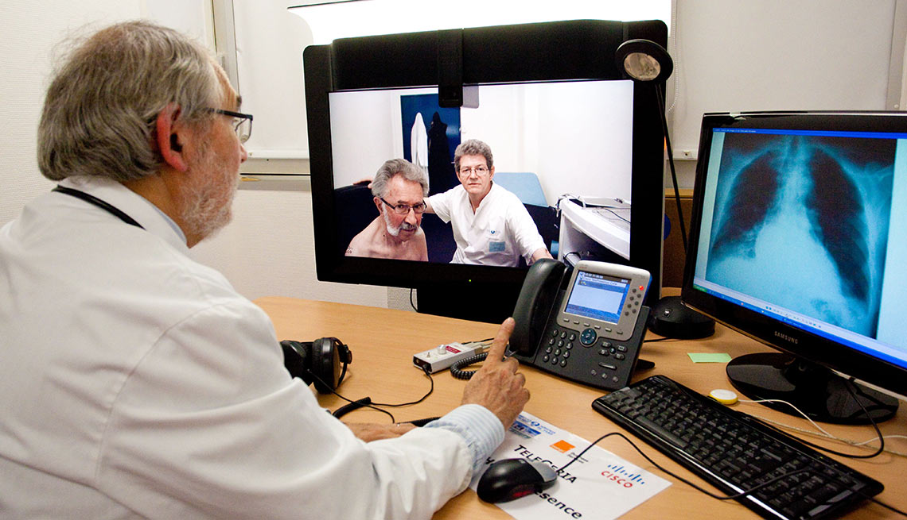

O Jornal do Tio Giovane
Segunda-feira, 24 de Novembro de 2025 | Edição Nº 3, Ano 135 | Preço: R$ 100
Revolução digital na Saúde: entenda as inovações que a tecnologia vem trazendo

Imagine poder consultar um médico especialista sem sair de casa ou ter sua saúde monitorada 24 horas por dia, 7 dias por semana, sem a necessidade de estar em um hospital. O que parecia ficção científica há alguns anos tem se tornado realidade graças aos avanços no monitoramento remoto e na telemedicina.
Essas tecnologias estão revolucionando não apenas a cardiologia, mas diversas áreas da medicina,oferecendo novas possibilidades tanto para pacientes quanto para profissionais de saúde.A convergência entre tecnologia e saúde está criando um paradigma no cuidado médico, onde a distância física já não é mais uma barreira para o acesso a serviços de saúde de qualidade.
21 de Novembro de 2025
SAÚDE E BEM-ESTAR: APROFUNDAMENTO
Combate a dengue em Cubatão
Equipes atuaram em duplas, orientam a população e aplicaram larvicidas em pontos estratégicos
Agentes do Serviço de Controle de Zoonoses, da Secretaria Municipal de Saúde de Cubatão, percorrem a região do Jardim Costa e Silva de casa em casa para orientar os moradores sobre a importância da eliminação de possíveis criadouros do mosquito da dengue e outras arboviroses. As ações tiveram início na semana passada e prosseguem até amanhã (19). Na semana que vem, a previsão é de que os agentes estejam no Jardim 31 de Março....
Clique para ler mais...Acessibilidade e lazer são destaques do futuro Parque Mirim, em PG
Local contará com piso, mobiliário e brinquedos adaptados
IAcessibilidade e lazer estarão presentes no novo equipamento público que está sendo construído em Praia Grande, o Parque Mirim. O local contará com piso, mobiliário e brinquedos adaptados, visando atender da melhor forma pessoas com deficiência ou com mobilidade reduzida. As obras no local estão entrando em fase final de construção. Com mais de 22 mil metros quadrados, o equipamento ficará na Rua Rosa Marly de Souza, entre a Avenida Presidente Kennedy e a Avenida Presidente Castelo Branco, Bairro Mirim. A previsão é que o local seja entregue à população ainda em 2025....
Clique para ler mais...São Vicente amplia acesso ao bem-estar com aulas gratuitas para idosos
Prefeitura oferece aulas gratuitas de Pilates, Capoeira e Defesa Pessoal para pessoas na terceira idade
A proposta vai além da atividade física / Divulgação/PMSV...
Clique para ler mais...Artigos Científicos e Estatísticas
síndrome de burnout: A DOENÇA DO SÉCULO XXI
Se você se sente cansado, desmotivado, irritado e apresenta dores musculares, isso pode se dever ao burnout. Aproximadamente, 6 em cada 100 trabalhadores sofrem de síndrome de burnout, o mesmo que esgotamento profissional. No entanto, a prevalência varia de acordo com o setor, chegando até 66,6% em determinadas profissões.
Publicado em 22 de Novembro de 2025 Clique para ir ao Artigo (Link Externo)...Estatística Sobre a Ansiedade – Brasil 2025
A ansiedade é uma emoção normal, experienciada pelas pessoas no seu dia a dia, e caraterizada por sentimentos de tensão, preocupação, insegurança, normalmente acompanhados por alterações físicas como o aumento da pressão arterial e da frequência cardíaca, sudação, secura da boca, tremores e tonturas.
Publicado em 15 de Novembro de 2025 Clique para ir ao Documento (Link Externo)...Doenças em Alta em 2025
Quais São os Principais Riscos à Saúde Este Ano? Introdução às Doenças Emergentes Em 2025, o cenário da saúde pública é moldado por doenças emergentes, que têm se tornado cada vez mais relevantes para a sociedade global.
Publicado em 20 de Novembro de 2025 Clique para ir ao Artigo (Link Externo)...Opinião e Controvérsia.
Saúde Pública
Dieta cetogênica
A dieta cetogênica, ou dieta keto, é uma abordagem alimentar que reduz drasticamente a ingestão de carboidratos e aumenta o consumo de gorduras, visando induzir o estado de cetose no corpo....
Clique para ler o Debate...Saúde e Tecnologia
O Avanço da Telemedicina: Conectando Pacientes e Médicos a Distância
De um lado, a otimização de custos; do outro, o medo do desemprego em massa. Analistas pesam o impacto social da automação...
Clique para ler o Debate...Meio Ambiente e Bem estar
Cubatão: Do "Vale da Morte" ao Símbolo da Recuperação Ambiental
Cubatão, na Baixada Santista, ganhou notoriedade internacional nas décadas de 1970 e 1980 devido aos seus índices altíssimos de poluição atmosférica, decorrentes de um grande Polo Industrial com refinarias e empresas petroquímicas e químicas. Essa poluição intensa fez com que a cidade fosse apelidada de "Vale da Morte" pela ONU....
Clique para ler o Debate...Notícias Internacionais: O sistema de saúde no mundo.
EUA: O sistema de saúde nos Estados Unidos é complexo e não oferece cobertura universal
O sistema de saúde nos Estados Unidos é complexo e não oferece cobertura universal, sendo dividido entre programas públicos como Medicare e Medicaid e seguros de saúde privados. Estrutura do Sistema de Saúde.
O sistema de saúde americano é caracterizado por uma combinação de programas públicos e seguros privados. Os principais programas públicos incluem:.
Publicado em 24 de Novembro de 2025 Clique para ir ao Artigo (Link Externo)...Alemanha: Sistema universal e obrigatório
O sistema de saúde da Alemanha é bem diferente do Brasil, por isso, é normal surgirem dúvidas ao imigrar para o país. Neste artigo, vamos explicar como se organiza esse sistema, além de fornecer dicas e todas as informações necessárias para que você tenha seu direito à saúde garantido.
Publicado em 24 de Novembro de 2025 Clique para ir ao Documento (Link Externo)...China: Como funciona a saúde na Asia
Na Ásia, o sistema de saúde varia significativamente entre os países. A China, por exemplo, possui um sistema de saúde público universal, mas também oferece planos de saúde obrigatórios e opções de seguro saúde privado.
Publicado em 20 de Outubro de 2025 Clique para ir ao Artigo (Link Externo)...